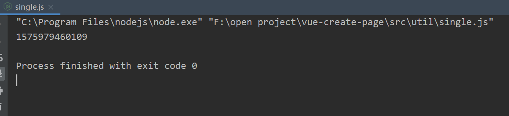

单例模式在前端开发中，有着广泛的应用场景，像前端缓存、页面模态框的创建等，只需要初始化一次，后面直接取之前的实例就好了。通俗来说，单例模式就是保证全局仅有一个实例，并且能够全局访问，核心就是这两点。
const Singleton = function (name) {
this.name = name
};
Singleton.prototype.getName = function () {
console.log(this.name)
};
Singleton.getInstance = (function () {
let instance = null;
return function (name) {
if (!instance) {
instance = new Singleton(name)
}
return instance
}
})();在JavaScript中，实现一个全局变量，最简单的就是声明一个全局变量，但是会容易造成变量污染，不建议使用。采用闭包封装私有变量，是一个不错的选择。如上述代码所示，在构造方法上声明一个获取实例的方法，声明一个私有变量，返回的方法中保存中对私有变量的引用，利用闭包，就能够一直保持每次获取的值是一样的。
单例模式还有一个比较有用的地方就是在我们给DOM元素绑定事件时，如果只想绑定一次，防止重复绑定，那么此时，也可以利用单例模式的原理，封装一个简单的单例方法，如下所示：
const getSingle = function (fn) {
let result;
return function () {
return result || (result = fn.apply(this, arguments))
}
};如下测试代码：
const test = getSingle(function () {
console.log(new Date().getTime());
return true
});
test();
test();
test();
虽然test方法调用了三次，但是实际上只执行了一次。因为第一次返回值是true，后面调用就直接return了，不会再走或的逻辑了。